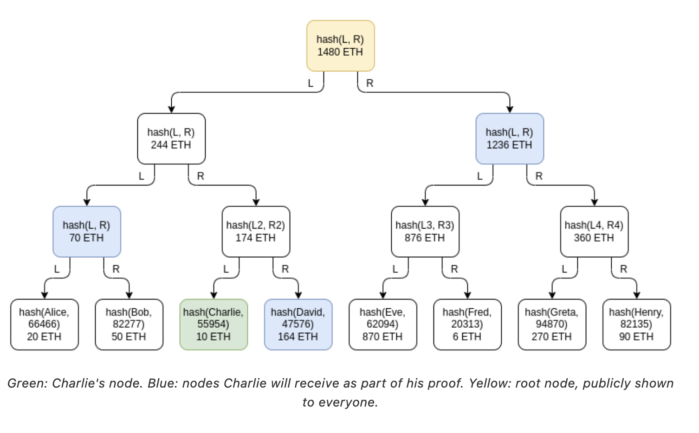
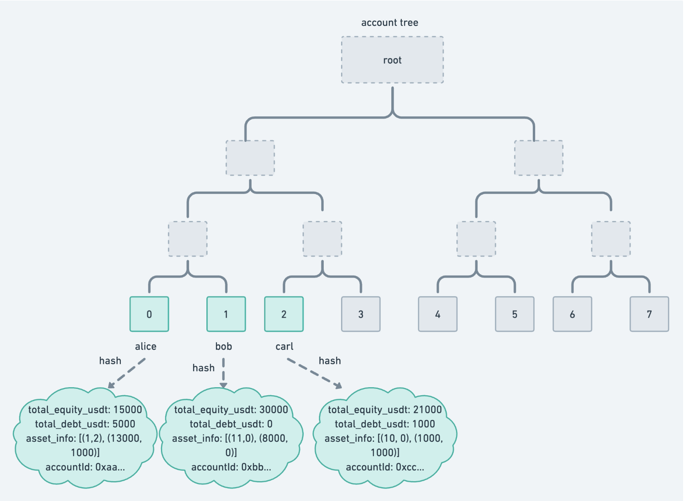
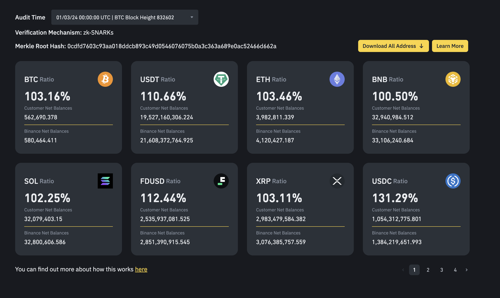
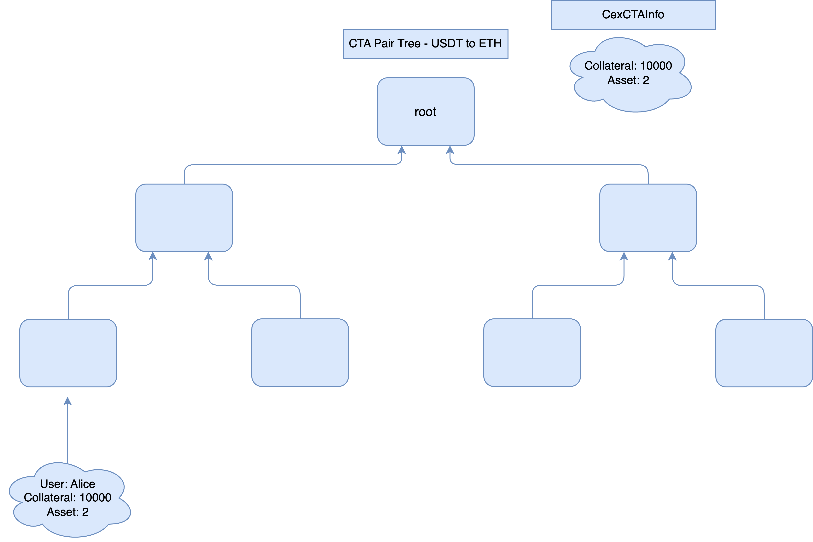
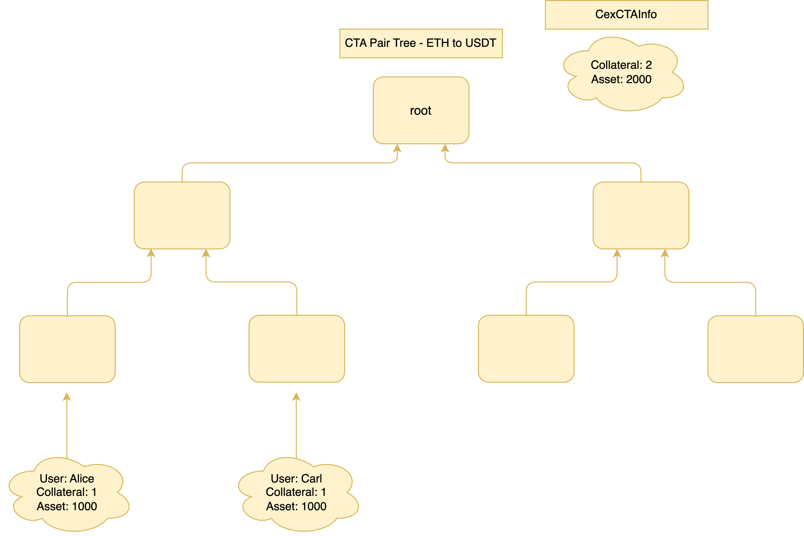
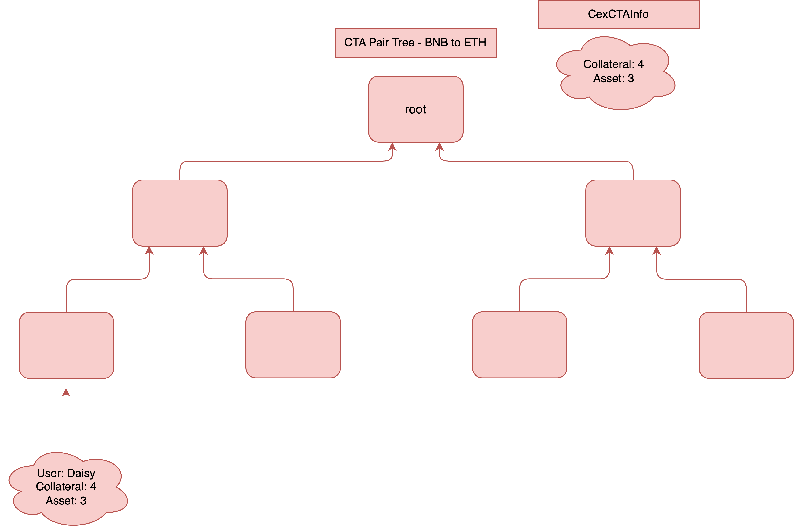

Vulnerability report: Binance PoR dummy user attack
You can leave comments on the hackMD version of this document here.
This document describes a potential attack on Binance Proof of Reserves (PoR) 123 solution.
TL;DR: According to this attack, Binance has the ability to add dummy (non-existing) users to their userbase with an equity (positive) position in low-quality assets and a debt (negative) position in high-quality ones as long as, when converted to dollars, the net balance is greater than 0. This attack can be exploited by Binance to diminish the required on-chain reserves of high-quality assets (while increasing the required reserves of low-quality ones) and still be able to claim its solvency. If users wanted to withdraw their high-quality assets, Binance would not necessarily have these immediately at their disposal and would be required to liquidate low-quality assets. However, the liquidation may be unfeasible due to variable market conditions, exposing the user to the risk of not being able to withdraw their funds.
1. Intro to PoR
The core idea of a PoR protocol is to let users verify that the assets held by a Centralized Exchange (CEX) fully back their deposits so that these can be securely withdrawn at any time.
A PoR protocol, according to the definition provided by Vitalik, is split into two sides:
- Prove that CEX's customers deposits equal X - Proof of Liabilities (PoL)
- Prove CEX's ownership of the private keys of X assets - Proof of Assets (PoA)
With these two proofs, a CEX is able to prove that it has the funds to pay back all of its depositors. Binance1 makes an example: When a user deposits one Bitcoin, Binance's reserves increase by at least one Bitcoin to ensure client funds are fully backed ... What this means in actual terms is that Binance holds all user assets 1:1 (as well as some reserves).
The PoA is relatively easy to achieve. The CEX must sign an off-chain message to prove ownership of a private key and, therefore, of the assets controlled by that private key.
The PoL is more tricky. Users' deposits are only stored inside the CEX's database. The two main problems involve privacy and verifiability. Information about the deposits of each user should not be revealed to the public. Furthermore, a single user can only verify the correctness of their deposit but cannot tell anything about other users' deposits. A way to achieve verifiability and (partial) privacy is to accumulate users inside a Merkle Sum Tree and publish the Merkle Root, containing a hash and a balance representing the sum of the CEX's liabilities.

The CEX can provide users with their Merkle Proof (in blue, for Charlie) to let them verify they have been accounted for correctly in the liabilities summation.
Note that the security of any PoR protocol relies on the assumption that a percentage of users4 must verify their inclusion in the tree. A user that is not able to verify their correct inclusion in the tree signals that they were discarded from the computation of the total liabilities and should open a dispute.
Protocols such as Summa and exchanges such as BitMEX, Kraken, and many others deployed different flavors of the PoR mentioned above. Binance's PoR is the only one that supports the user's lending feature2. Namely, a user may use coin X as collateral to borrow another coin Y. In that case, the user's balance for coin X is negative, while the net balance across the two coins, when converted to dollars, must be positive.
2. Binance PoL Design
The main idea of Binance's PoL protocol is to wrap the process of accounting the liabilities inside a zk-SNARK to guarantee its correctness. The BatchCreateUserCircuit is employed to:
- Generate the Account Merkle Tree starting from the users' data
- Compute the total summation of Binance's liabilities, starting from the users' data
The circuit will output:
- account_tree_root, namely the root of the Merkle Tree (we are not dealing with Merkle Sum Tree here!)
- asset_list_commitment, hash of a list containing the summation of Binance liabilities for each cryptocurrency
2.1 Account Tree
The account Merkle Tree is built starting from users' data:
- each leaf is computed as: hash(accountId, equity, debt, commitment(AssetInfo))
- each middle node is computed as hash(left_node, right_node)

The snapshot represents the following userbase (Scenario 1) (as described in3):
| ETH (price:2000 USDT) | ETH | USDT (price: 1 USDT) | USDT | Total Net Balance (USDT) | |
|---|---|---|---|---|---|
| Equity | Debt | Equity | Debt | ||
| Alice | 1 | 2 | 13000 | 1000 | 10000 |
| Bob | 11 | 0 | 8000 | 0 | 30000 |
| Carl | 10 | 0 | 1000 | 1000 | 20000 |
This is the result of the following user behavior: - Alice deposits 10000 USDT to CEX, then uses 10000 USDT as collateral to borrow 2 ETH, then uses 1 ETH as collateral to borrow 1000 USDT, and swaps 1 ETH with Bob's 2000 USDT - Bob deposits 10 ETH and 10000 USDT to CEX; swap 2000 USDT with Alice's 1 ETH - Carl deposited 10 ETH to CEX, then used 1 ETH as collateral to borrow 1000 USDT
The equity for each user is calculated by converting their deposits for each currency into USDT and then summing them together. The same goes for debt. Furthermore, an array keeps track of the state of the user's deposit for each currency AssetInfo before their conversion to USDT.
2.2 Asset commitment
The asset commitment keeps track of the summation of the liabilities for each currency.
type CexAssetInfo {
total_equity u64
total_debt u64
usdt_price u64
}
Given the previous example, the CexAssetInfo for ETH would be {22, 2, 2000}, while the CexAssetInfo for USDT would be {22000, 2000, 1}.
The asset commitment is generated by hashing together the CexAssetInfo for each currency asset_commimtent = hash(ele0, ele1, ..., elen).
2.3 Circuit Design
Providing the Account Tree root and the asset commitment out of nowhere would be meaningless. It is necessary to prove that rules were met while building such commitments. For example, that individual users' AssetInfo were included in the Account Tree (to compute the root) and in the CexAssetInfo (to compute the asset commitment).
These are part of the constraints of the BatchCreateUserCircuit. The circuit also has to check that, for each user's leaf added to the Account Tree, the total_equity_usdt and the total_debt_usdt are:
- Correctly computed starting from the user's AssetInfo
- total_equity_usdt - total_debt_usdt is greater than 0
The last constraint is fundamental to avoid Binance adding dummy users with negative net balances to the Account Tree, which would reduce their total liabilities.
Further details about the constraints are listed in the technical specifications3. Note this is a simplified version of the Binance PoL Design. The implementation employs a more complex design based on user batches to achieve better performance. In particular, these commitments are built in batches such that each batch yields a proof, which is eventually aggregated into a single proof.
2.4 Verification
Once the proof generation is over, users should be able to:
- Verify that the
account_tree_rootand theasset_list_commitmentwere computed according to the rules. This is done by verifying the zk-SNARK proof generated by Binance from the previous step (this step can also be outsourced to a smart contract) - Decommit the
asset_list_commitmentto extract theCexAssetInfofor each currency and compare it with the Assets declared by Binance as part of their Proof of Assets (not analyzed in this writeup) - Verify their correct inclusion inside the Account Tree. This is done by verifying a Merkle proof provided by Binance to each of them.
Given a specific currency, the total liability for that currency is given by equity minus liabilities. In the previous example, the total liability for ETH equals 20, and the total liability for USDT equals 20000. Binance has to prove that it holds at least 20 ETH and at least 20000 USDT to guarantee its solvency to its users. This information is made available to the public through an interface1.

3. Dummy User Attack
Such verification performed successfully by each user should guarantee the solvency of Binance according to the definition provided in paragraph 1. But there's a caveat here.
Binance's (PoR) is designed under the assumption, consolidated in academia4, that adding dummy users to the liabilities computation would only increase the liabilities and, therefore, be against the custodian's interest. This is apparently true, given that the circuit constraints that the net balance of a newly added user is greater than 0 dollars when added to the Account Tree. However, given that Binance supports users' debt, this assumption is no longer true. Indeed, Binance could add a dummy user to the Account Tree and be able to claim themselves solvent (under the definition provided in paragraph 1) even if they are not.
Let's modify the userbase snapshot as follows (Scenario 2):
| ETH (price:2000 USDT) | ETH | USDT (price: 1 USDT) | USDT | BNB (price: 1500 USDT) | BNB | Total Net Balance (USDT) | |
|---|---|---|---|---|---|---|---|
| Equity | Debt | Equity | Debt | Equity | Debt | ||
| Alice | 1 | 2 | 13000 | 1000 | 0 | 0 | 10000 |
| Bob | 11 | 0 | 8000 | 0 | 0 | 0 | 30000 |
| Carl | 10 | 0 | 1000 | 1000 | 0 | 0 | 20000 |
| Daisy | 0 | 3 | 1 | 0 | 4 | 0 | 1 |
The dummy non-existing user Daisy has been added to the user base in this hypothetical scenario. Daisy has used 4 BNB as collateral to borrow 3 ETH. Her net balance is 1 dollar. The total equity is greater than the total debt (when converted to USDT), so the user can be correctly added as an input to the circuit to compute the account_tree_root and the asset_list_commitment. The resulting asset list commitment would be computed from the following CexAssetInfo:
- for ETH
{22, 5, 2000} - for USDT
{22001, 2000, 1} - for BNB
{4, 0, 1500}
Under such circumstances, Binance must prove that it held at least 17 ETH, at least 20001 USDT, and at least 4 BNB to guarantee its solvency to its users.
If Binance controls 17 ETH, 20001 USDT, and 4 BNB, and the actual userbase of Binance is composed of Alice, Bob, and Carl, Binance is not solvent according to the definition given in paragraph 1. For example, if all its (real!) users were to withdraw their money simultaneously, Binance wouldn't have 20 ETH at their disposal and they would need to liquidate 4 BNB to get the 3 ETH required to satisfy the demand of their users. However, the BNB market might not be liquid enough to guarantee the conversion. Nevertheless, given the PoL design implemented by Binance, there's no way for its users to spot this discrepancy, even under the assumption that each user successfully performs the verification of their proof.
In particular, Binance can add a dummy (non-existing) user to its user base with an equity (positive) position in low-quality assets and a debt (negative) position in high-quality ones as long as, when converted to dollars, the net balance is greater than 0. This attack can be exploited by Binance to diminish the required on-chain reserves of high-quality assets (while increasing the required reserves of low-quality ones) and still be able to claim its solvency. If users wanted to withdraw their high-quality assets, Binance would not necessarily have these immediately at their disposal and would be required to liquidate low-quality assets. However, the liquidation may be unfeasible due to variable market conditions, exposing the user to the risk of being unable to withdraw their funds.
4. Conclusion
The analysis demonstrates that, when introducing the user's lending feature into a PoR solution, the consolidated assumption that adding dummy users to the liabilities computation would be against the custodian's interest4 is no longer true. Indeed, this feature introduces further complexity into a PoR protocol, which opens up the possibility of new attacks, such as the Dummy User Attack described in this document. Any CEX that provides lending-related products to their users will eventually have to incorporate such a feature into their PoR protocol and might be exposed to a similar attack.
Preventing a CEX from adding dummy users to the Account Tree is tricky since the CEX is the only controller of their database, which contains the data used to populate the tree. Even in extreme scenarios where these data are public, it would be challenging to discriminate between real and dummy users.
Given this vulnerability, the statement "when a user deposits one Bitcoin, Binance's reserves increase by at least one Bitcoin"1 is no longer guaranteed. Despite the vulnerability, the proof generated by the PoR protocol, when verified, does guarantee that when a user deposits one Bitcoin, Binance's reserves increase by the value of one Bitcoin measured in dollars.
A potential solution is to modify the PoR protocol to increase the transparency provided to the users by adding a set of Collateral To Asset (CTA) Pair Trees.
As an example, let's consider a CEX that provides the following lending products:
- USDT (Collateral) to ETH (Asset)
- ETH (Collateral) to USDT (Asset)
- BNB (Collateral) to ETH (Asset)
In such a case, three CTA Pair Trees must be created. The leaves of each CTA Pair Tree are the users' outstanding lending positions for that specific Collateral-to-asset pair. The circuit is modified such that:
- Any user lending position is added as a leaf to the respective CTA Pair Tree
- For each Tree, an accumulator
CexCTAInfo,similar toCexAssetInfo,keeps track of the state of the CTA Pair balance. - For each Tree, the accumulator
CexCTAInfois a public output of the circuit.
Considering Scenario 2, these would be the three Trees that the CEX has to create as part of their PoR.



The user would then later verify their correct inclusion in the tree by verifying a Merkle Proof provided by the CEX, similar to what happens with the Account Tree.
Comparing this solution to Scenario 2, the CEX is still able to perform the Dummy User Attack, but users are now provided with better information to evaluate its solvency. In particular, they are now aware that if they were all to withdraw their ETH from the CEX, the CEX would need to liquidate 4 BNB to satisfy the demand.
It's worth noting that such a solution might be tricky to apply if the CEX offers users the possibility of borrowing multiple assets together by using multiple coins as collateral. In that case, a solution might be to extend the CTA Pair Tree to support these multiple coins as collateral and multiple coins as assets. Furthermore, such a solution might introduce significant computational complexity to the PoR. For example, if we consider 150 coins available for borrowing and the same 150 coins accepted as collateral (without considering the multiple coins feature), it would result in $150*149=22350$ CTA Pair Trees.
A more elaborate solution to mitigate the "Dummy user attack" scenario by incorporating lending business logic into the zk-SNARK circuit has been proposed by Binance. This solution introduces a third field, labeled "collateral", within the token configuration for each user, which denotes the quantity of that token utilized as collateral for borrowing other assets.